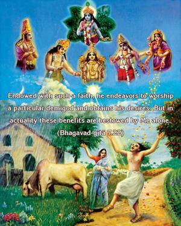
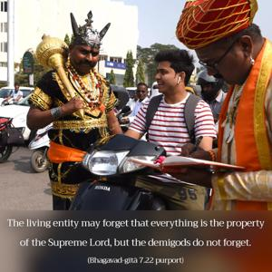
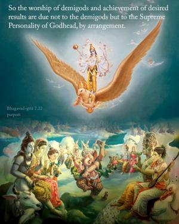
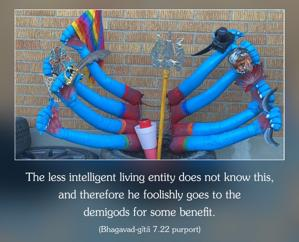
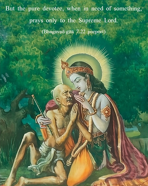

Endowed with such a faith, he endeavors to worship a particular demigod and obtains his desires. But in actuality these benefits are bestowed by Me alone.





The demigods cannot award benedictions to their devotees without the permission of the Supreme Lord. The living entity may forget that everything is the property of the Supreme Lord, but the demigods do not forget. So the worship of demigods and achievement of desired results are due not to the demigods but to the Supreme Personality of Godhead, by arrangement. The less intelligent living entity does not know this, and therefore he foolishly goes to the demigods for some benefit. But the pure devotee, when in need of something, prays only to the Supreme Lord. Asking for material benefit, however, is not a sign of a pure devotee. A living entity goes to the demigods usually because he is mad to fulfill his lust. This happens when something undue is desired by the living entity and the Lord Himself does not fulfill the desire. In the Caitanya-caritāmṛta it is said that one who worships the Supreme Lord and at the same time desires material enjoyment is contradictory in his desires. Devotional service to the Supreme Lord and the worship of a demigod cannot be on the same platform, because worship of a demigod is material and devotional service to the Supreme Lord is completely spiritual.
For the living entity who desires to return to Godhead, material desires are impediments. A pure devotee of the Lord is therefore not awarded the material benefits desired by less intelligent living entities, who therefore prefer to worship demigods of the material world rather than engage in the devotional service of the Supreme Lord.